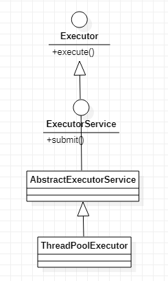
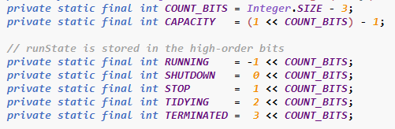
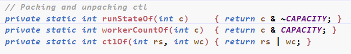
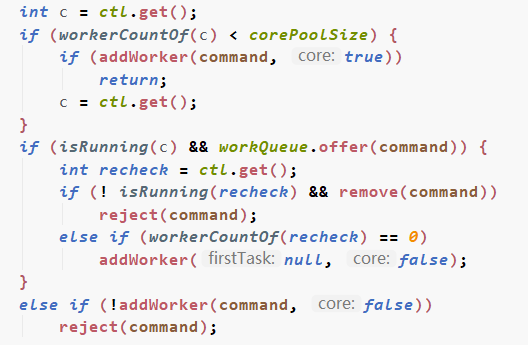
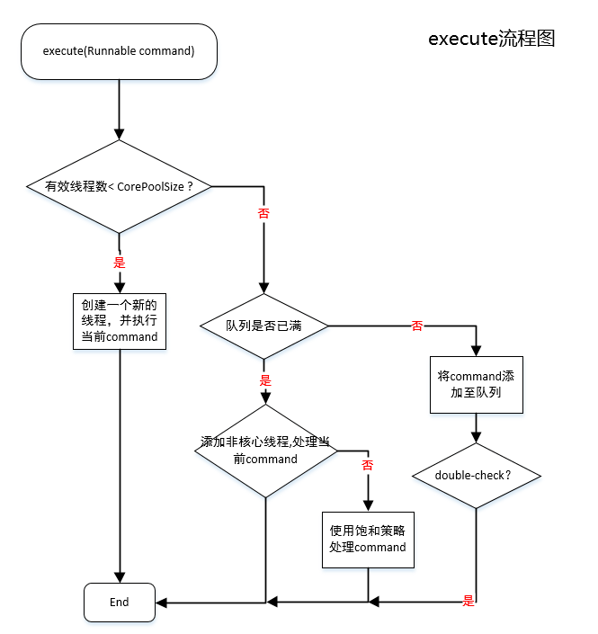
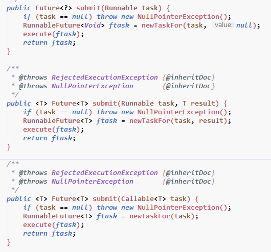

池化技术简单来说就是提前准备资源，当需要的时候可以直接获取，避免了在需要大量资源时因创建资源耗时而导致阻塞和过高的时延。常见的有线程池，连接池和内存池。
Java的线程池就是提前创建一定数量的线程，当需要线程处理相应工作的时候直接唤醒获取即可，从而增加系统的处理速度。
1. Java 中ThreadPoolExecutor
1.1 ThreadPoolExecutor构造参数说明
Java中常用的线程池类为ThreadPoolExecutor，其继承关系如下：

Executor和ExecutorService接口的声明确定了ThreadPoolExecutor有两种方式提交task——execute和submit。二者的区别在于：
- execute：通过execute提交的task之后不会有返回值，提交的task也没有返回值；
- submit：通过submit提交task之后会返回一个Future对象。获取到这个对象之后，我们可以对提交task进行相应的操作。例如，取消，判断是否结束，阻塞获取task返回的结果等等。
再看ThreadPoolExecutor，这个类有三个构造方法，使用不同的构造方法会对一些参数使用一些缺省设置。这里看一下参数最全的构造方法：
1 | public ThreadPoolExecutor(int corePoolSize, |
下面对参数进行一一说明：
int coreSize: 线程池核心线程数量，这个数量的线程在线程池关闭之前会一直存活；
int maximumPoolSize: 线程最大线程数量，当核心线程被使用完之后，线程池中线程数量可以临时增到这个数量；
long keepAliveTime: 除了核心线程之外，临时增加线程的存活时间，超过这个时间线程就会结束；
TimeUnit unit: keepAliveTime的时间单位；
BlockingQueue<Runnable> workQueue: 线程池中的一个阻塞队列，当线程池中线程被使用完之后，提交的task就会被放入这个队列；JUC包中提供的队列主要有以下几种：
- ArrayBlockingQueue： 一个FIFO队列，新增加的元素会被追加到集合的尾部。这是一个有界的集合，一旦创建其大小就不能够再改变了。往已满队列中追加元素会导致阻塞；
- DelayQueue: 无界队列，在放入元素的时候可以指定一个延迟时间，只有当延迟时间结束后，这个元素才能被取出；
- LinkedBlockingQueue：通过不同的构造器可以创建一个有界或者无界的队列，队列中的元素FIFO；
- PriorityBlockingQueue：无界队列，基于优先级实现的队列。集合中的元素按照优先级排序。
ThreadFactory threadFactory: 线程工厂，用来创建线程池中的线程。
RejectedExecutionHandler handler: 线程池的饱和策略，如果线程池中线程被用完了，队列也满了，那么对于新提交的task就会使用这个策略。目前主要有以下几种：
- AbortPolicy：直接抛出异常(默认策略)
- CallerRunsPolicy：调用线程池所在的线程去执行被拒绝的task，会阻塞线程池所在的线程；
- DiscardOldestPolicy：丢弃队列里最久之前的一个任务，并执行当前任务。
- DiscardPolicy：不进行任何处理，直接丢弃掉。
1.2 ThreadPoolExecutor 提交流程
1.2.1 ThreadPoolExecutor 中的ctl变量
在讨论线程池的提交流程之前，我们需要先把注意力集中到一个特殊的变量上——ctl。 ctl是线程池中的控制状态，它是一个原子级别读写的integer，包含两层含义：
- workerCount: 有效线程数；
- runStat: 线程池的状态，有Running，Shutdown，Stop，Tidying，Terminate五种状态。

因为5种状态至少需要3位来表示，剩下的全部用来表示workerCount。所有COUNT_BITS为Interger.SIZE - 3 = 29位。CAPACITY表示的是最大容量，29表示的最大值为2^29 -1,即1 << 29 -1（左移一位相当于乘以2， 1*2^29 -1），二级制表示为00011111111111111111111111111111。相当于低29位用来表示容量，高3位留下来表示状态。
五种状态对应的表示分别如下：
RUNNING：
11100000000000000000000000000000running状态下线程池接受新的task，并处理队列中的task
SHUTDOWN：
00000000000000000000000000000000shutdown状态下不会接受新的task，但是会处理队列中的task
STOP：
00100000000000000000000000000000不接受新的task，处理队列中的task，终止正在处理的task
TIDYNG：
01000000000000000000000000000000所有的task结束，workerCount为0，无活跃线程
TERMINATED：
011000000000000000000000000000000terminated()方法执行结束
同时在线程池中还定义了三个方法来对ctl变量进行操作，其中两个是从ctl中获取workerCount和runStart，一个是通过指定的workerCount和runStat生成ctl：

runStateOf和workerCountOf都是简单的通过&计算将低29为或者高3位置0。而ctlOf这是通过 |操作将高3位和低29位组合到一起。
ctl变量的初始化语句入如下，表示的是running状态，当前worker数为0：
1 | private final AtomicInteger ctl = new AtomicInteger(ctlOf(RUNNING, 0)); |
1.2.2 提交任务流程
通过ThreadPoolExecutor提交任务有两种方式，一种是execute，由他自己实现。另一种是submit，由其父类AbstractExecutorService实现。
这里需要提前说明一些ThreadPoolExecutor类的一些属性：
workers：HashSet 用来存放线程池worker资源(线程)
workQueue：BlockingQueue 用来存放用户提交的task(Runnable)
1.2.2.1 通过execute提交task
execute(Runnable command)方法
这个方法体比较简短，我就直接全部粘过来了。

通过代码我们可以看到，最外围的分支结构有三个：
- 如果线程池的worker数量小于
corePoolSize,就会添加一个worker，执行当前的task(这里我们先不探究addWorker执行了什么操作)； - 如果第一种情况没有满足(当前wroker数已经达到了corePoolSize大小或者addWorker失败)，就把task添加到阻塞队列中。这个过程成功之后，就会进行一次double-check。
- 如果当前worker数量大于coreSize，且队列已满，就会尝试创建一个非核心线程来执行当前task。创建失败的话就会直接使用饱和策略处理task。
在double-check的过程中如果发现线程池已经不在运行状态就会把当前task移除，并使用饱和策略处理它。否则就会检查是否有必要创建一些新的线程。

addWorker(Runnable firstTask, boolean core)方法
这里的代码分解一下，首先看一下方法的参数列表：
1 | private boolean addWorker(Runnable firstTask, boolean core) |
这个方法需要传递两个参数，firstTask表示添加的新worker处理的第一个任务，布尔型的core表示添加的是否为核心线程。
跳过线程状态校验的过程，我们直接看这一段：
1 | for (;;) { |
这里是循环CAS来增加ctl的数值，一旦增加成功，就会正式地创建线程。
线面是创建线程的流程：
1 | boolean workerStarted = false; |
这里是直接创建了一个worker对象，而Worker的构造方法如下：
1 | Worker(Runnable firstTask) { |
可以看到，在构造方法中，Worker创建了一个新的线程作为成员变量。
当一个worker创建之后，还会进行重复校验，已确定worker确实创建成功。
1 | if (rs < SHUTDOWN ||(rs == SHUTDOWN && firstTask == null)) { |
线程创建成功之后，就会启动worker。
1 | if (workerAdded) { |
Worker
那么线程池创建了worker线程之后都干些什么呢？如果队列中没有任务要做，线程如何保活呢？如果队列中有worker，线程又会如何去执行呢？为了了解这些，剖析一下Worker的代码就很有必要了。
ThreadPoolExecutor类通过一个HashSet<Worker>来存放Worker对象：
private final HashSet<Worker> workers = new HashSet<Worker>();
通过Worker的构造器我们看到Worker在构造线程的时候是将自身作为参数传到方法中的，因为其本身也实现了Runnable接口，所以当执行t.start()的时候，实际上执行的是Worker的run()方法。一下是wroker的runWorker方法：
1 | final void runWorker(Worker w) { |
粗略地看一下代码，我们知道worker首先会判断自己是否有属于自己的firstTask，如果有的话，就先执行这个task，这里是task.run()，只是普通的方法调用，执行了task的逻辑。当自己的第一个task执行完之后，worker就会进行循环，通过getTask()方法不停地从workerQueue中获取task。这个getTask是个阻塞方法，会一直循环直到返回task或者线程池状态不为running的时刻。
当然，这个getTask()的工作内容不仅仅是返回队列中的task，同时也管理着非核心线程的存活。我们通过参数指定了非核心线程的存活时间，当线程池中有非核心线程且线程空闲的时间超过了指定的时间，就会做掉这些线程。这里它是通过workQueue.poll(keepAliveTime, TimeUnit.NANOSECONDS)这个方式实现，当超过这个等待时间获取到的结果依然为null，表示当前的线程已经空闲了keepAliveTime这么长时间了，属于超时的非核心线程。之后会return null，在worker的runWorker()方法中调用processWorkerExit()方法结束当前worker。
1 | boolean timed = allowCoreThreadTimeOut || wc > corePoolSize; |
1.2.2.2 通过submit提交task
这个方法是在ThreadPoolExecutor的父类AbstractExecutorService中定义的。AbstractExecutorService是一个抽象类。而submit的逻辑也比较简单：

参数的主要区别在于Runnable和Callable，前者无返回值后者有返回值，可以通过Future的get方法阻塞获取。
通过submit提交的task可以获取一个future对象，可以对已提交的task进行相关操作。例如获取返回值或者判断运行状态等等。
可以看到，submit只是将task封装成了一个ftask，然后调用了execute方法调教了这个task到线程池中。这里使用了模板方法模式，submit调用的是由子类的线程池实现的execute，也就是上面的execute方法。
小结：
关于线程池的构造参数含义和参数的使用逻辑在日常使用过程中还是很值得关注的，对于日后线程池问题定位调优都会有不少的帮助。理解线程池工作原理，线程池中worker的执行流程可以让我们对池化技术和资源利用的看法有更进一步的了解。